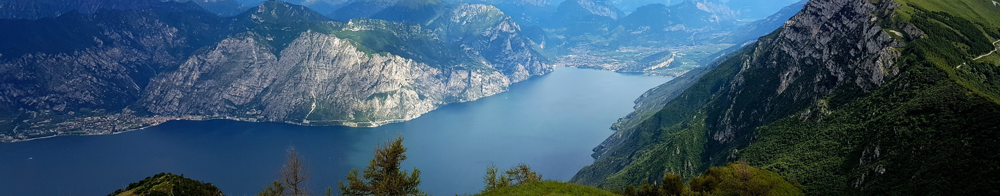

<body>
  <app-navbar></app-navbar>
  
  
  <div class="content">
    <div class="left-sidebar"></div>
    <div class="central-content">
      <div class="top-space"></div>
      <router-outlet></router-outlet>
    </div>
    <div class="right-sidebar"></div>
  </div>
</body>